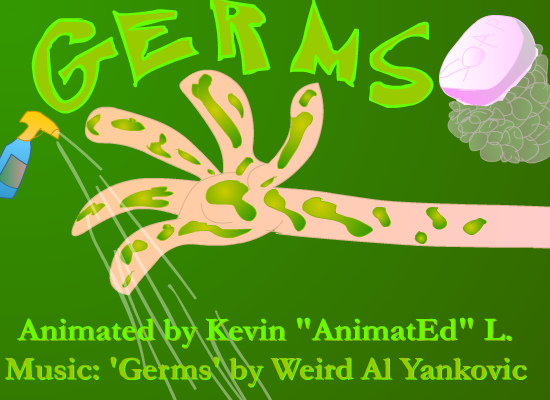

"Germs" é uma paródia de estilo de "Weird Al" Yankovic inspirada no rock industrial da banda Nine Inch Nails. A música apresenta, de maneira exagerada e bem-humorada, um narrador extremamente preocupado com germes e contaminações. O medo irracional de germes retratado na música é conhecido tecnicamente como misofobia.
Musicalmente, "Germs" procura reproduzir diversas características do som do Nine Inch Nails. As guitarras elétricas apresentam semelhanças com as utilizadas nas músicas "Terrible Lie" e "Mr. Self Destruct", enquanto a batida, os instrumentos de apoio e o riff final lembram "Closer". O refrão também apresenta semelhanças com "I'm Afraid of Americans", de David Bowie, que conta com a participação de Trent Reznor, vocalista e líder do Nine Inch Nails.
A influência de "Closer" fica especialmente evidente no encerramento da música, que é muito semelhante ao final da canção original. Com sua combinação de guitarras pesadas, batidas industriais e uma letra sobre germofobia, "Germs" consegue reproduzir de forma humorística o estilo sombrio e agressivo do Nine Inch Nails, sendo um dos exemplos mais marcantes de paródia de estilo presentes em Running with Scissors.
Sometimes I really wanna be alone...
But that's one state I'm never in...
Because I know that I've got millions upon millions
Of tiny, one-celled organisms living on my skin
(Germs) I rub and scrub until my flesh is raw and bleeding
(Germs) But they just come right back again
(Germs) I can't even see 'em, but I know they're up to something
Hey, don't touch that - you don't know where it's been
They're all over me
They're inside of me
Can't get 'em offa me
I'm covered with ... (Microscopic bacteria)
What do they want from me?
What'll they do to me?
There's no escape for me
I'm crawling with ... (Microscopic bacteria)
Now if I ever dare to go to sleep
That's when they start their sneak attack
In the morning I wake up in utter horror
To find my teeth are covered with bacterial plaque
(Germs) Can't get those parasitic creatures off my face
(Germs) And there's more comin' every day
(Germs) I never said that they could camp out on my body
I wish they'd pack their tiny little bags and move away
They're all over me
They're inside of me
Can't get 'em offa me
I'm covered with ... (Microscopic bacteria)
What do they want from me?
What'll they do to me?
There's no escape for me
I'm crawling with ... (Microscopic bacteria)
(Germs)
(Germs)
(Germs)
(Germs)
(Germs) They're creepin' around my shorts
They're under the bathroom sink
(Germs) They're ridin' inside my car
They're swimmin' in every drink
(Germs) They're hidin' between my toes
They're lurkin' in every kiss
(Germs) I've got 'em way up my nose
In every orifice
(Germs) I'm gonna show them who's boss
I'm gonna get even yet
(Germs) Just gimme some Lysol spray
Just hand me a moist towelette
(Germs) Don't tell me I'm paranoid
I know that they're after me
(Germs) Look under the microscope
See??
They're all over me
They're inside of me
Can't get 'em offa me
I'm covered with ... (Microscopic bacteria)
What do they want from me?
What'll they do to me?
There's no escape for me
I'm crawling with ... (Microscopic bacteria)
(Germs) They're all over me
(Germs) I can feel 'em all over me
(Germs) Over every part of me
(Germs) (Microscopic bacteria)
(Germs) I know they're watching me
(Germs) They're always watching me
(Germs) They're comin' after me
(Germs) (Microscopic bacteria)
Won't somebody help me?? (Germs) (Microscopic bacteria)
Please somebody help me (Germs) (Microscopic bacteria)
You've got to believe me (Germs) (Microscopic bacteria)
They're out to get me (Germs) (Microscopic bacteria)
They wanna control me! (Germs) (Microscopic bacteria)
They wanna destroy me! (Germs) (Microscopic bacteria)
They're tryin' to kill me! (Germs) (Microscopic bacteria)
It kind of upsets me... (Germs) (Microscopic bacteria)